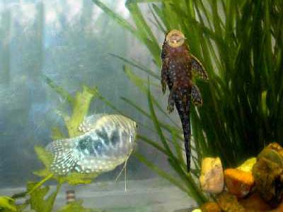
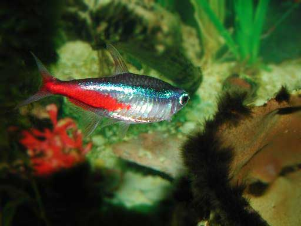
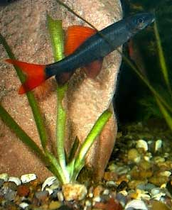

Aquarium
I have two tanks, one for small and one for large fish. For hours I can watch this beautiful another world.



Gourami and ancistrus


Barbuses in my
100 liter tank

Neon

The mystus catfish is 9 years old. It was always the oldest
and biggest in the tank. So it didn't learn to flee from its enemies.
When the auratus came, the mystus had to be put into another tank.

Platydoras costatus.
It comes out only for feed.

Botia
's portrait

Labeo bicolor